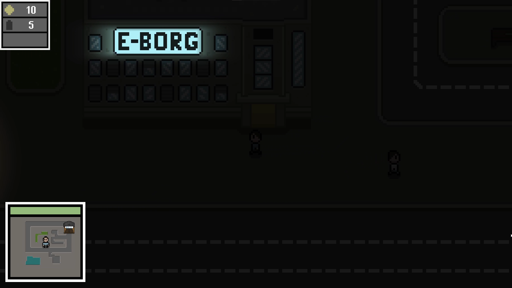
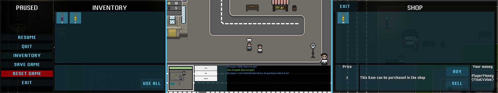
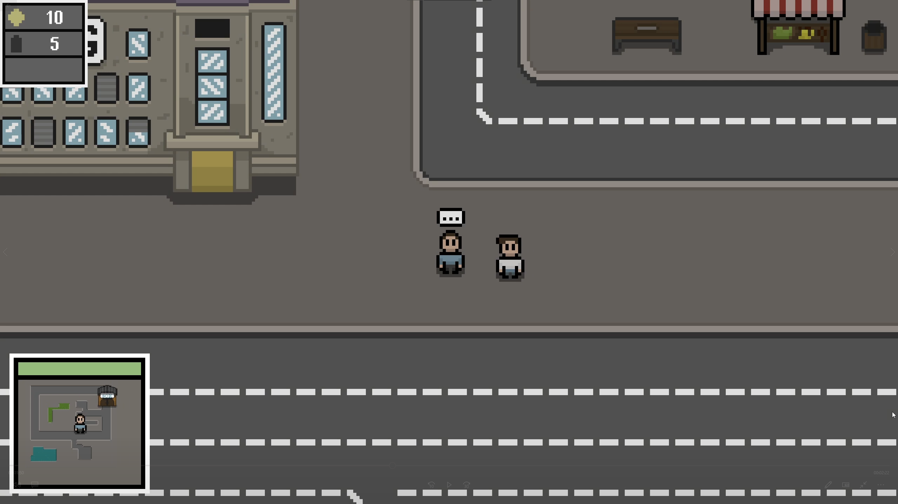

Project BodyFrame Version 0.11 Update
04. jan. 2022
In the last update I've shown you how I've added a pause, an inventory and the introduction of NPCs with my first ever AI, which wasn't the smartest. After that I've continued to make some progress but soon after I realised that there is a big problem with my game.
A fresh start
The problem with my game was that I've made it while learning to both use Unity and code in C#. That lead to some very bad practices, terrible code and a very confusing project. That became very apparent as I've tried to implement more advanced features. After I've thought for a long time I've decided it's best that I start from scratch. I was very excited since I've planned out what I want to achieve, what features and mechanics I want and that made it possible for me to create all of that in a very organised way and to the best of my abilities, which are better than they were a year ago. It was also an oppurtunity for me to start the game the way I wanted to (not in the medieval era) so that it fits the story better. I have a playable demo planned and I like that it's set in the beginning of the game story.

With that it mind, I was able to re-do most of the mechanics and features I had in the old version. I haven't done much in terms of fighting just because it isn't the focal point at the beginning of the story. But I'm very happy with the features I was able to complete in such a short time, those are moving, camera control, health manipulation, minimap, NPC logic, dialog system, inventory, store (and it's communication with the store), saving system, pause menu.
The current implemented UI is far from final and it's design is really basic and not what I'm going for, but since it's just there to allow me to implement the features I'm fine with it for now.

The new additions to the game so far is the story progression for NPCs, day/night cycle, making buildings transparent once you're behind them and a very flexible interaction system. I'm very excited about all of these features so let's talk about them.
Transparent buildings
With the new art I quickly realised that tall buildings feel really awkward to walk around and it really breaks the immersion. I wanted to see how other games fixed this issue and I was quickly sold on this concept. For those who haven't seen this before, it allows the player to also walk behind buildings and that increases the playable are and it also makes the world feel more real, as you'd expect that you can walk behind buildings. Here it is in action:

Flexible interaction system
Since my plans for the game are heavily focused on the story and making the world feel as alive as possible, it's very important that I have a good interaction system. The old one was ok for what it was, but I wanted to create a system that can easily be used with small modifications for any kind of interactions. I was able to use the core system for small interactions such as reading boards and then also for more complex interactions such as the dialog and opening a store and making purchases. This kind of coding is what I've wanted to achieve with the restart of the project, since in the old one each thing was doing only what it was meant for. This kind of object orientated programing really speeds up the process and makes things organised and clean. I suggest that you use it as much as possible in your projects as well. If you're interested to hear more about this topic let me know, I'm happy to share it with you.

Story progression for NPCs
This feature also comes from my wish to make this game very story oriented. While I'm happy with the way the story is shaping up, I also want the story to be unique for each player, or at least for each play style. It's common to see marketing for RPGs promising that "your choices matter". It usually comes down to parts of story being changed, and for a couple of different voice lines and cut scenes. I really want to make as many dialogs as possible to have an impact on how the game plays. Not just the story outcome or which branch of the story will play out, but also how the world feels to the player.
I've developed this system with this simple example. You can start a dialog with the NPC and only one choice in this dialog matters for his progression and that is your answer to his question where the food store is. Until you tell him where it is he'll continue to have the same conversation with you and walk the same route. But once you've told him, he'll change his route to go to the store where he'll stay idle. If you then talk to him he provides more information to the player on the way the stores work in the game and what types can you expect.
I want the player to figure out what all he can do in the world and providing some NPCs to help the player understand what he can do is a very natural way, compared to tutorials. Some players who would play this part for the first time would answer that they don't know where the store is as they're being truthful. Once they'd find the store and found this NPC again they would tell him. Then seeing him change his behaviour would give them a feeling of achievement. Other player who would tell him where the store is without knowing them self would learn more about the world through dialog and also get a feeling of achievement. I believe such systems can intrigue any player to explore the world more and be excited about what more is there to the game.

New art
As you've noticed in case you've read the first part of this blog, I've completly changed all the art. I do intend to use the art I made for the old version but in a different chapter of the game. The story I have in mind start in modern or slightly futuristic times so with the fresh start I've set my self out I wanted to start in the begining. I've also changed the style a bit, just to make it consistent and a bit quicker for me to make. The characters are now 16x16px and important art for the player (player, NPCs, interactable objects) have a black outline, while background art has the outline in a darker shade of the color adjacent to it. I'm quite happy with how it turned out, what do you think?:
If you enjoyed reading this blog post let me know, and I would appreciate it if you would follow me on Twitter and Youtube. That's where you can see more of my content and see these updates before I even post them on the blog. I will also notify you of my blog update on Twitter once it's online, so you won't miss one.